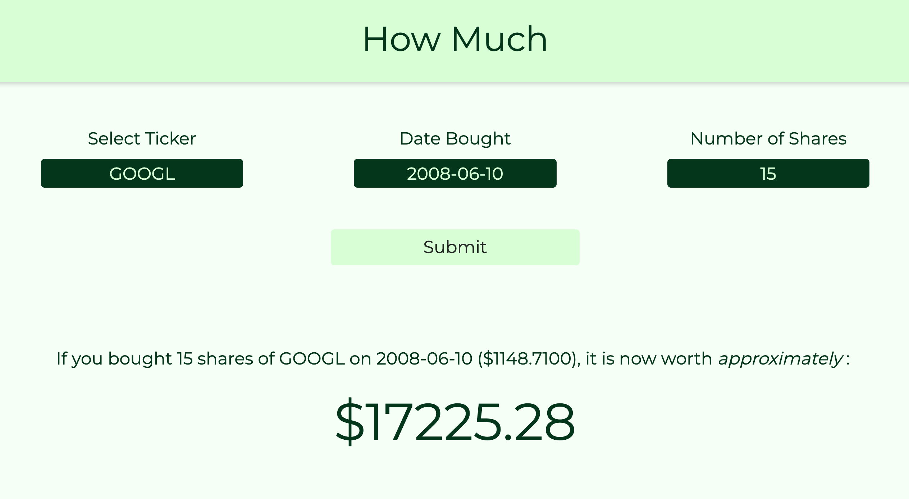
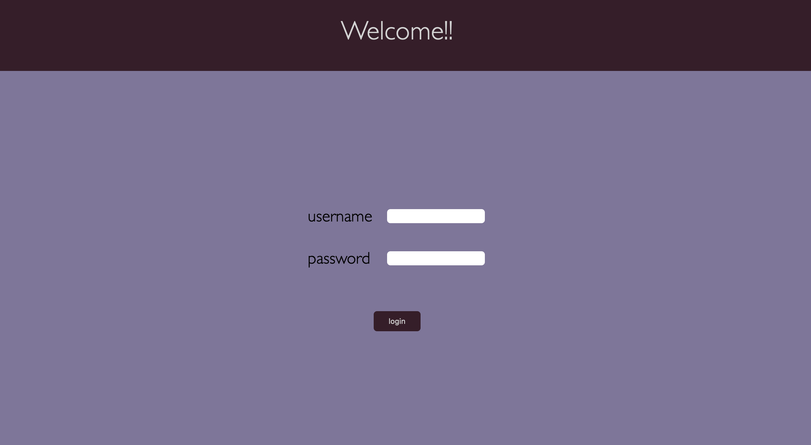

Jacob Chambers
Software Engineer
Introduction
I am a solution driven software engineer looking to increase versatility through project
involvement. I have full
stack experience in designing and implementing web-applications and have work experience in the
field of application
security.
Aside from my technical abilities, I am a very sociable person and love to stay active. I am a strong believer in putting everything you've got into everything you do. I enjoy picking up new skills, and polishing existing skills to become the best all-around person I can be.
Aside from my technical abilities, I am a very sociable person and love to stay active. I am a strong believer in putting everything you've got into everything you do. I enjoy picking up new skills, and polishing existing skills to become the best all-around person I can be.
- I love to problem solve.
- I have a very high attention to detail.
- I strive to create something I'm proud of.
- I try to learn something everyday.

Projects
eMotionaL
Awarded most innovative project. Fourth year capstone project that can predict human emotion
through vocal input using
machine learning techniques (Keras & Tensorflow). This project set out to determine the
emotion of the user based on only vocal analysis. To do this a convolutional
neural network was used to train a model that could predict emotions with ~%80 accuracy.

HowMuch
I currently work as a developer at an investment company. I have the opportunity to fiddle
around with a lot of data
regarding stocks, bonds, etc. I was interested in what the returns would be today if you
invested in certain stocks at
some past date. There was no application online that I found that could take care of this
request so I built one myself.

Dolphin.io
Dolphin was intended to solve the issue of sending money to your peers when you don't have a
data connection available
or WiFi. The transactions are sent over sound and received on the peers device and
processed later once connected to
the internet. Dolphin uses an API created by Authorize.net in order to achieve a sandbox
environment for money tranfers.
Dolphin was awarded best API use at Hack Western 5.

jwt-fun
This was a simple project that utilizes JWT and protected routes. Uses SSL by
generating server side certificate, and uses express to serve all static files from backend.
Queries MongoDB for authentication and generates (upon login success) server side JWT for
authorization/session management.

AWS 2.0
This project was created to demonstrate how cloud computing platforms work and to
familiarize myself with deployments on Azure. Three deployments were issued. The frontend
server was accessible by the public web, while the database and cloud usage monitor servers were
behind a private network. Users can create virtual machines, monitor usage, and change VM
configurations.

BB's Regional Roofing
A contract website developed for a local home-construction company. Developed with
google analytics and SEO best practices to ensure maximum exposure.
See www.bbsregionalroofing.ca.